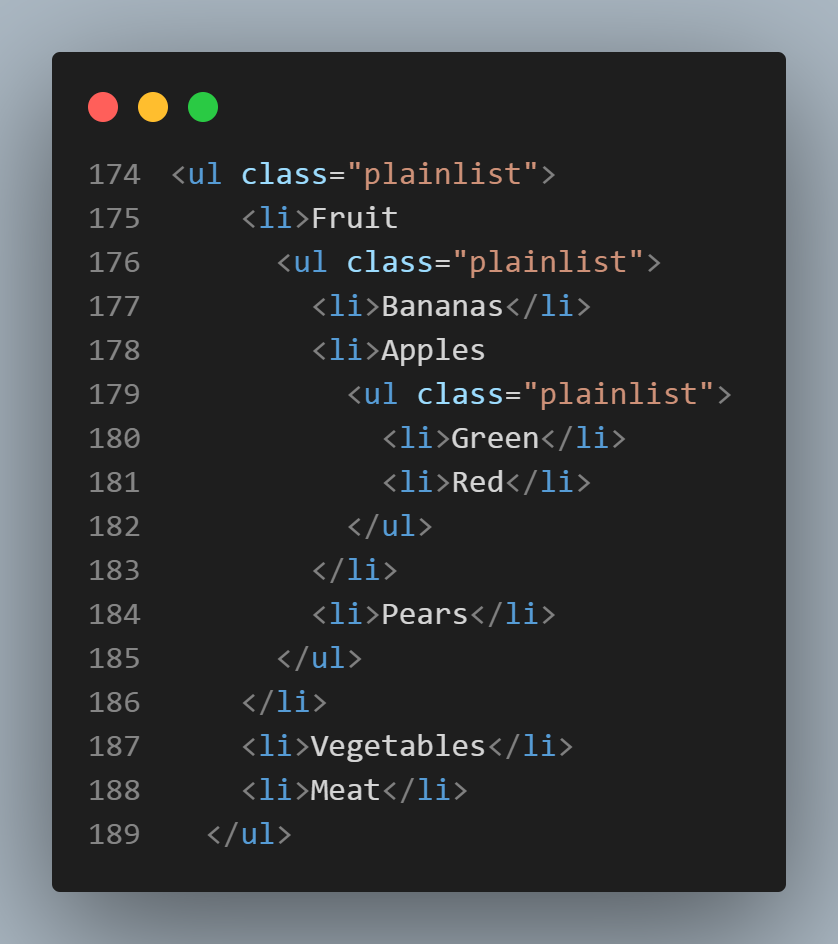

"HTML5 e CSS3 - Módulo 2"
Lists
"Curso em Vídeo"
This is the student's notebook of Ricardo Barros Becheli
"Curso em Vídeo"
This is the student's notebook of Ricardo Barros Becheli
<!DOCTYPE html>TitleHTML Semantic ElementsHead, header and headingParagraphFormatingEntitiesEmojisImagesFaviconMark the textHow to display codeQuotationsListsLinksResponsive imagesAudioVideoAn ordered list starts with the <ol> tag. Each list item starts with the <li> tag.
Example:
The code looks like that:

This screenshot was obtained by VSCode's CodeSnap extention I have just installed.
Once you start typing the word "type", Emmet gives you the hints:

1.1.1) type="1" The list items will be numbered with numbers (default)
Example:
1.1.2) type="A" The list items will be numbered with uppercase letters
Example:
A syntax example taken from Type A:

1.1.3) type="a" The list items will be numbered with lowercase letters
Example:
1.1.4) type="I" The list items will be numbered with uppercase roman numbers
Examnple:
1.1.5) type="i" The list items will be numbered with lowercase roman numbers
Examnple:
start attribute:The code stays this way:

The reversed attribute is a boolean attribute. When present, it specifies that the list order should be descending (9,8,7...), instead of ascending (1, 2, 3...).
Example:
Syntax example:

The navigation bar was created in an "unordered list" that has its respective CSS style. Therefore, ALL unordered lists other than the nav bar display confused.
To avoid that I was turning all the previous pages <ul> into <ol>.
But not now. Now it's impossible because I must explain and display an unordered list as it is without any CSS styles.
So I found a solution for that at MDN Web Docs. It's called "revert", which is a CSS keyword.
But I had to apply this keyword only to this page's examples, not to the nav bar. So I created an inline class called "plainlist" in all the <ul> examples and, in the"style" linkes document I attributed "revert" to every CSS style given to the original <ul>.
And... IT WORKED!!! U-HUUUU!!!
The HTML code is this:
And the CSS code is that:

The HTML <ul> tag defines an unordered (bulleted) list. (Same syntax as <ol>).
Example:
See how the nested list code is:

Just to show the feature I set the start of the "new ones" to "5", meaning the 5th letter of the sequence.
And I invented "Fort1" and "Fort2" just to show you that the unordered nesting cause a progressive indentation. Like the fruits in "nested lists 1" above.
A description list is a list of terms, with a description of each term.
The <dl> tag defines the description list
The <dt> tag defines the term (name)
And the <dd> tag describes each term:
Example (I've set a 100px margin left to indent the whole example):
Syntax example:

Note that the example is not indented because the code is indented. It's because of the 100px margin I have set.